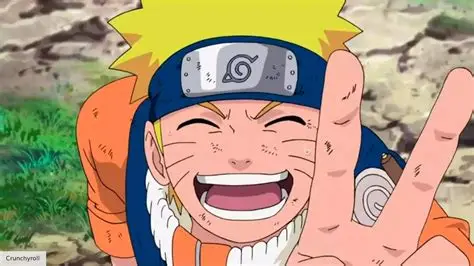

ANIME LIST
Here is a list of some popular anime series:
Attack on Titan
Discription:The story of Attack on Titan centers on a civilization inside three circular walls. According to the knowledge propagated locally, it is the last surviving vestige of human civilization. Its inhabitants, known as Eldians, have been led to believe that over one hundred years ago, humanity was driven to the brink of extinction after the emergence of humanoid giants called Titans, who attack and eat humans on sight to eat a Titan shifter so they could turn back to human form. The last remnants of humanity retreated behind three concentric walls and enjoyed roughly a century of peace. Within the walls, the thought of venturing outside is strongly frowned upon and discouraged

Jujutsu Kaisen
Discription:The series follows Yuji Itadori, a high school student with extraordinary physical abilities. After coming into contact with a cursed object—a finger belonging to the powerful Curse King Sukuna—Yuji swallows it to protect his friends, becoming the host of Sukuna. He then joins Tokyo Jujutsu High, a school where sorcerers train to combat curses, malevolent creatures born from human negative emotions. Alongside his friends and powerful mentors, Yuji fights to exorcise curses and uncover deeper mysteries behind curses and sorcery.

My Hero Academia
Discription:My Hero Academia is set in a world where the majority of the population possesses superpowers known as "Quirks." The story follows Izuku Midoriya

Demon Slayer
Discription:Demon Slayer follows Tanjiro Kamado,Demon Slayer: Kimetsu no Yaiba (鬼滅の刃, Kimetsu no Yaiba; rgh. "Blade of Demon Destruction")[4] is a Japanese manga series written and illustrated by Koyoharu Gotouge. It was serialized in Shueisha's shōnen manga magazine Weekly Shōnen Jump from February 2016 to May 2020, with its chapters collected in 23 tankōbon volumes. It has been published in English by Viz Media and simultaneously on the Manga Plus platform by Shueisha. It follows teenage Tanjiro Kamado, who joins the Demon Slayer Corps after his family is slaughtered and the sole survivor, his younger sister Nezuko, is turned into a demon, in the hopes of turning her human again and defeating the demon king Muzan Kibutsuji.

One Piece
Discription:One Piece (stylized in all caps) is a Japanese manga series written and illustrated by Eiichiro Oda. It follows the adventures of Monkey D. Luffy and his crew, the Straw Hat Pirates, as he explores the Grand Line in search of the mythical treasure known as the "One Piece" to become the next King of the Pirates.

Death Note
Discription:Death Note (stylized in all caps) is a Japanese manga series written by Tsugumi Ohba and illustrated by Takeshi Obata. It was serialized in Shueisha's shōnen manga magazine Weekly Shōnen Jump from December 2003 to May 2006, with its chapters collected in 12 tankōbon volumes. The story follows Light Yagami, a genius high school student who discovers a mysterious notebook: the "Death Note", which belonged to the shinigami Ryuk, and grants the user the supernatural ability to kill anyone whose name is written in its pages. The series centers around Light's subsequent use of the Death Note to carry out a worldwide massacre of individuals whom he deems immoral and to create a crime-free society, using the alias of a god-like vigilante named "Kira", and the subsequent efforts of an elite Japanese police task force, led by enigmatic detective L, to apprehend him.

Naruto
Discription:Naruto[a] is a Japanese manga series written and illustrated by Masashi Kishimoto. It tells the story of Naruto Uzumaki, a young ninja who seeks recognition from his peers and dreams of becoming the Hokage, the leader of his village. The story is told in two parts: the first is set in Naruto's pre-teen years (volumes 1–27), and the second in his teens (volumes 28–72). The series is based on two one-shot manga by Kishimoto: Karakuri (1995), which earned Kishimoto an honorable mention in Shueisha's monthly Hop Step Award the following year, and Naruto (1997).
Fullmetal Alchemist: Brotherhood
Discription:Fullmetal Alchemist: Brotherhood (Japanese: 鋼の錬金術師 FULLMETAL ALCHEMIST, Hepburn: Hagane no Renkinjutsushi) is a Japanese anime television series adapted from the original Fullmetal Alchemist manga series by Hiromu Arakawa. Produced by Bones, the series is directed by Yasuhiro Irie, written by Hiroshi Ōnogi and composed by Akira Senju. The series was conceived in order to create a faithful adaptation that directly follows the entire storyline of the original manga, after 2003's Fullmetal Alchemist anime series strayed away from it to tell its own story after running out of published manga material to adapt.

Dragon Ball Z
Discription:Dragon Ball Z[a] (DBZ) is a Japanese anime television series produced by Toei Animation. Part of the Dragon Ball media franchise, it is the sequel to the 1986 Dragon Ball television series and adapts the latter 325 chapters of the original Dragon Ball manga series created by Akira Toriyama. The series aired in Japan on Fuji TV from April 1989 to January 1996 and was later dubbed for broadcast in at least 81 countries worldwide.[7]

Hunter x Hunter
Discription:Hunter × Hunter (pronounced "hunter hunter"[4]) is a Japanese manga series written and illustrated by Yoshihiro Togashi. It has been serialized in Shueisha's shōnen manga magazine Weekly Shōnen Jump since March 1998, although the manga has frequently gone on extended hiatuses since 2006. Its chapters have been collected in 38 tankōbon volumes as of September 2024. The story focuses on a young boy named Gon Freecss who discovers that his father, who left him at a young age, is actually a world-renowned Hunter, a licensed professional who specializes in fantastical pursuits such as locating rare or unidentified animal species, treasure hunting, surveying unexplored enclaves, or hunting down lawless individuals. Gon departs on a journey to become a Hunter and eventually find his father. Along the way, Gon meets various other Hunters and encounters the paranormal.

Tokyo Revengers
Discription:The story follows Takemichi Hanagaki, a 26-year-old part-timer with a gloomy life, who learns that his ex-girlfriend, Hinata Tachibana, has died in a dispute involving the Tokyo Manji Gang. The next day, while returning from his part-time job, Takemichi gets pushed off the subway platform by someone. As he is about to be hit, he jumps twelve years back in time, to the year he was dating Hinata. Discovering this, he makes the decision to do everything to prevent her death.